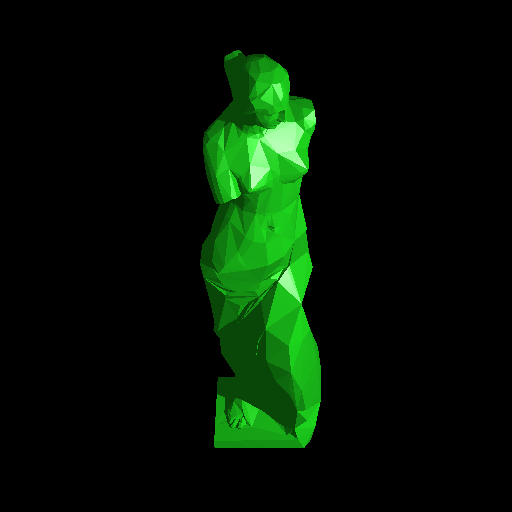
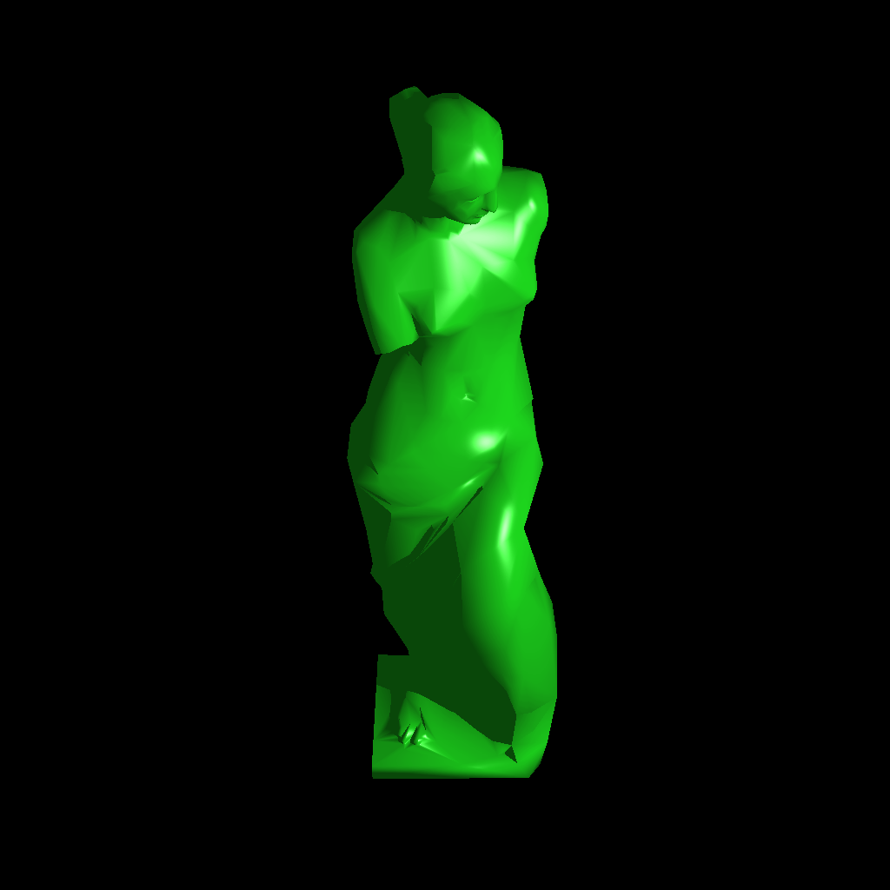
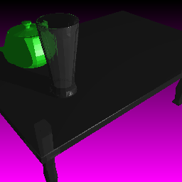
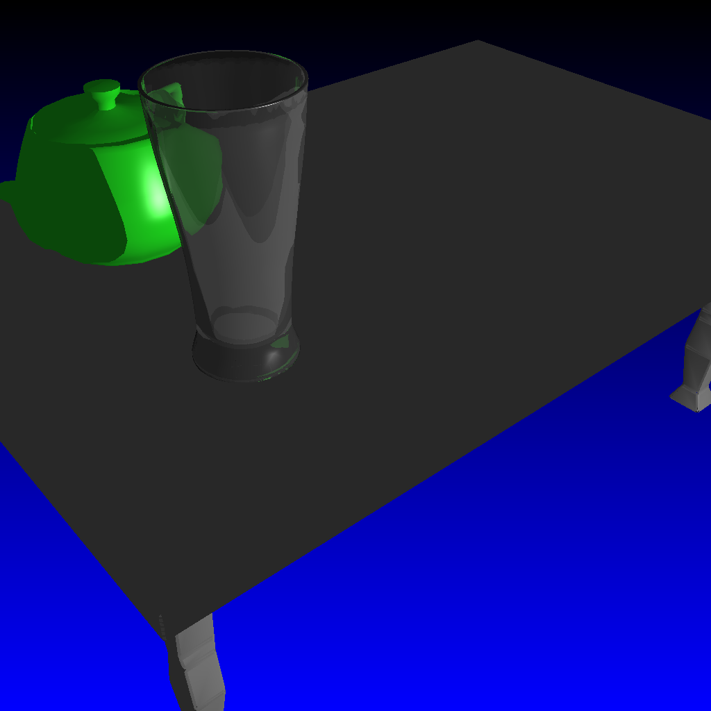

Objective 8:
Phong Model using Vertex Normal Interpolation on Triangles
For Vertex Normal Interpolation, I import vertex normals from OBJ files, and use Barycentric Gouraud-style interpolation across the face of the imported triangle. The result is a very nice, smooth mesh rendering that is much more aesthetically pleasing and professional than the faceted look.  Venus De Milo mesh, no interpolation
 Venus De Milo mesh with Vertex Normal Interpolation  Glass scene with no interpolation  Glass scene with Vertex Normal Interpolation |
Written by: Mike Jutan
CS 488 - Computer Graphics
University of Waterloo